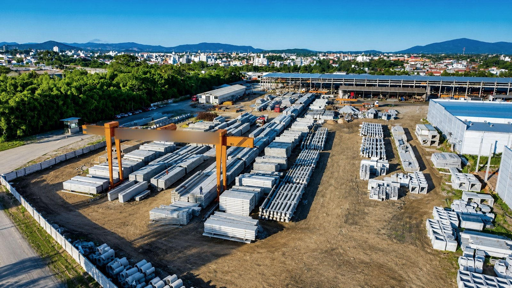
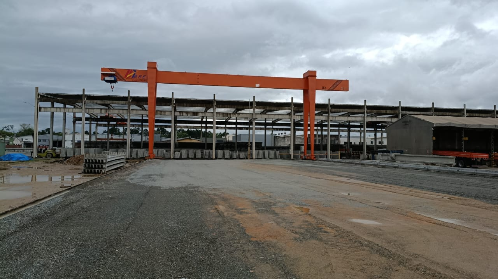

PÁTIO E FLUXO
Pátio de fábrica
de pré-moldados

Contexto
A produção e o estoque ocupavam o galpão. A movimentação precisava abrir espaço para a saída das peças.
O que a AWL fez
Organizou o estoque externo e o fluxo do pátio, conectando produção e carregamento.
O que mudou
O estoque passou a ocupar o pátio de forma organizada, com peças saindo da produção direto para o carregamento.
Registro do antes
